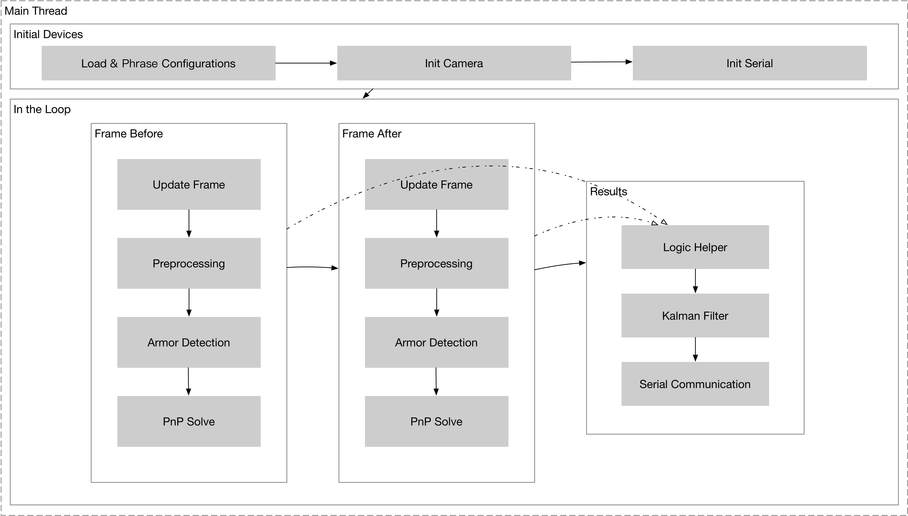
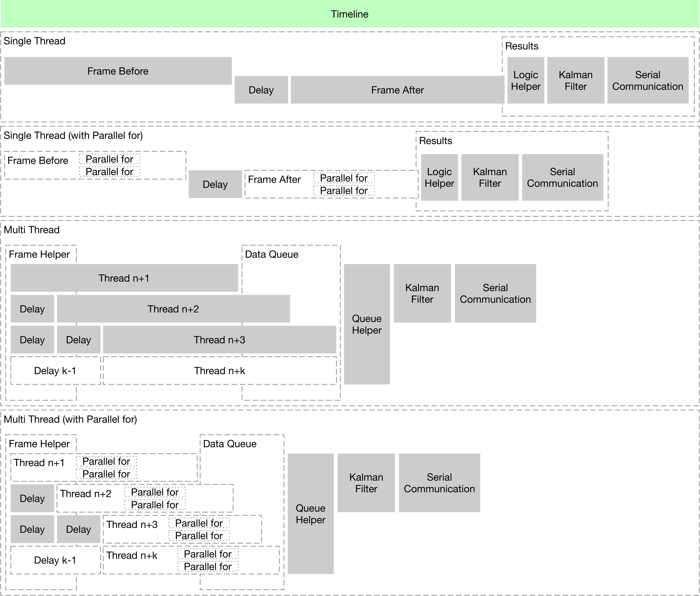
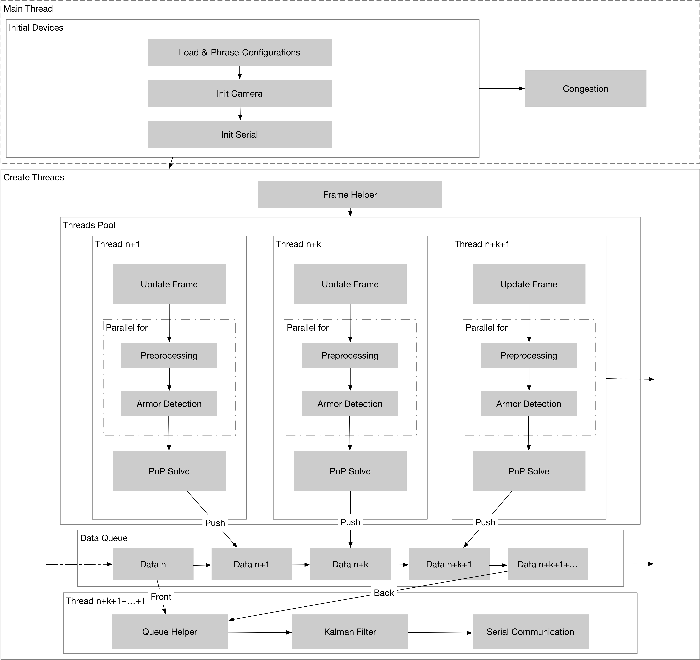

“正如基因在复制中实现物种进化，代码也需要进行迭代，一个合理的架构是不可或缺的”，因此，本文的重点不是在于改进现有的视觉算法，而是在现有的视觉算法基础下，通过 C++ 实现低延迟和多线程的数据处理，构建一个易维护、可迭代的视觉算法架构。
良好的代码目录结构有助于多人协作，辅以 Git 版本记录，可实现高效率和高可靠性的代码管理，以下给出代码目录结构参考模版：
1├── LICENSE2├── README.md3├── doc4└── src5├── armor6├── buff7├── camera8├── filter9├── PnP10├── serial11└── main.cpp
LICENSE 开源许可证，使用相对宽松的 MIT 许可
README.md 项目的简单说明，包含摘要，使用的系统环境和项目结构说明
doc 项目详细说明文档，Markdown 语法，文件名以 src 中的子文件夹名命名；如 doc/serial.md 对应 src/serial 的使用文档
src 项目的全部源码，分为以其子文件夹命名的各个模块和 main.cpp
armor 识别视野中最贴近视野中心的一个装甲板，获取其在图像中的位置buff 按顺序识别能量机关激活装甲板，获取其在图像中的位置camera 初始化工业摄像头或普通摄像头，配置摄像头参数filter Kalman 滤波，用于预测目标击打位置PnP 对目标进行测距serial 与单片机进行通讯，发送击打目标的预测位置main.cpp 将以上各个模块以一定的方式组织并连接，实现完整的视觉算法功能统一的代码规范是代码集体所有权的基础，规范的代码可以大大增加可读性，方便后期的维护和迭代，为项目吸引更多的优质贡献者；以下是一些针对先前代码的规范约定及优化建议。关于更多的代码规范知识，请参考：
使用 C++ 的类型转换，如 static_cast<>()。不要使用 int y = (int)x 或 int y = int(x) 等转换方式。
C++ 采用了有别于 C 的类型转换机制，对转换操作进行归类。C 语言的类型转换问题在于模棱两可的操作；有时是在做强制转换 (如 (int)3.5)，有时是在做类型转换 (如 (int)"hello")。另外，C++ 的类型转换在查找时更醒目。
static_cast 替代 C 风格的值转换，或某个类指针需要明确的向上转换为父类指针时const_cast 去掉 const 限定符reinterpret_cast 指针类型和整型或其它指针之间进行不安全的相互转换对于迭代器和其他模板对象使用前缀形式 (++i) 的自增，自减运算符。
不考虑返回值的话，前置自增 (++i) 通常要比后置自增 (i++) 效率更高。因为后置自增 (或自减) 需要对表达式的值 i 进行一次拷贝。如果 i 是迭代器或其他非数值类型，拷贝的代价是比较大的.。
const 变量，数据成员，函数和参数为编译时类型检测增加了一层保障，便于尽早发现错误。
constconst。访问函数应该总是 const，其他不会修改任何数据成员，未调用非 const 函数，不会返回数据成员非 const 指针或引用的函数也应该声明成 constconst关键字 mutable 可以使用，但是在多线程中是不安全的，使用时首先要考虑线程安全。
通常对于多个函数使用的临时变量，我们使用更多的内存资源而不是牺牲 CPU 时钟。
xxxxxxxxxx111// Wrong2{3 foo(a / 2);4 bar(a / 2);5}6// Correct7{8 const auto b = a / 2;9 foo(b);10 bar(b);11}<stdint.h> 定义了 int16_t, uint32_t, int64_t 等整型，在需要确保整型大小时可以使用它们代替 short，unsigned long long 等。在 C 整型中，只使用 int。在合适的情况下，推荐使用标准类型如 size_t 和 ptrdiff_t。
如果已知整数不会太大，我们常常会使用 int，如循环计数。在类似的情况下使用原生类型 int，你可以认为 int 至少为 32 位，但不要认为它会多于 32 位。如果需要 64 位整型，用 int64_t 或 uint64_t。对于大整数，使用 int64_t。
不要使用 uint32_t 等无符号整型，除非你是在表示一个位组而不是一个数值，或是你需要定义二进制补码溢出。尤其是不要为了指出数值永不会为负，而使用无符号类型。
如果代码涉及容器返回的大小 (size)，确保其类型足以应付容器各种可能的用法。拿不准时，类型越大越好。
将所有数据成员声明为 private，除非是 static const 类型成员，只将对外部需要访问的声明为 public。类定义一般应以 public: 开始，后跟 protected:，最后是 private:，省略空部分。类型区分为变量优先，函数换行相隔。
所有头文件都应该使用 #define 来防止头文件被多重包含，命名格式当是： <PROJECT>_<PATH>_<FILE>_H_ 。为保证唯一性，头文件的命名应该基于所在项目源代码树的全路径。例如，项目 foo 中的头文件 foo/src/bar/baz.h 可按如下方式保护：
xxxxxxxxxx41...4尽可能地避免使用前置声明。使用 #include 包含需要的头文件即可。对于代码中的可变参数，尽可能地使用宏定义将其统一放在代码头部。此外，每个模块中应仅包含模块自身和引用的头文件，如有引用跨多个模块的头文件，应将其标记出来。
使用引用 foo(auto &b) 而不是传递实体 foo（auto b)。对于类似 calDistance() 这类重复调用但并不多次引用的函数，考虑使用 inline。
在流式数据处理中，对于线程的创建和使用，一律遵循循环在线程内的原则，避免反复创建线程造成的性能损耗。
xxxxxxxxxx81// Wrong2loop() {3 thread();4}5// Correct6thread() {7 loop();8}cpplint.py 是一个用来分析源文件，能检查出多种风格错误的工具。它不并完美，甚至还会漏报和误报，但它仍然是一个非常有用的工具。
https://github.com/google/styleguide/blob/gh-pages/cpplint/cpplint.py
线程是操作系统能够进行运算调度的最小单位。它被包含在进程之中，是进程中的实际运作单位，一个进程中可以并发多个线程，每条线程并行执行不同的任务，对于常见的多核心处理器，使用多线程可以提高代码执行效率。一般来说，使用多线程有以下原则：
要实现多线程，首先要了解在视觉识别中，单线程有哪些不足。首先我们分析单线程的处理流程，找到可以进行并行处理的步骤：

而对于射击装甲板这种本自要求低延迟的任务，视觉处理过程中的每一微秒都是十分珍贵的。从逻辑图中，我们可以看到单线程的处理流程是这样的 Initial Devices -> In the Loop (Frame Before -> Frame After -> Results)，执行每一步的时间都是线性叠加的。正是由于这种叠加效应，每一步的时间变化，都会导致整体处理时间的变化，因此每个目标的追踪过程往往是不平滑的。
主线程中，加载配置文件和设备初始化的步骤是无法进行并行优化的。在 In the Loop 的循环里，Results 的步骤在锁定目标前，需要连续的两个 Frame，因此对于它们的处理步骤可以作为线程的创建对象，这样可以节省 Frame After 的处理时间，提高发现装甲板的响应速度。
此外，搭载 amd64 架构处理器的 Intel NUC 相对于仅有 2 个 ARM Denver 高性能核心的 Nvidia TX2，NUC 处理器的每个核心具有更高的主频和算力，但后者具有极高的能效和更强的 GPU 算力，考虑到代码迁移，单线程的处理架构已不再适用。
多线程并不能带来视觉自瞄上质的飞跃，一方面是相较单线程，我们没办法清晰地控制 OpenCV 的函数是否使用多线程（或者说在编译时，我们已经为 OpenCV 的部分函数中加入了多线程支持），导致最后多线程代码的运算时间可能并不会比单线程快多少，另一方面，相比机械部分完成运动，视觉识别只是一瞬。此外，多线程的加入使得代码复杂程度指数形式的增加，会对代码编写和维护带来许多障碍。
对于整个目标追踪流程，一旦目标被锁定，Frame Before 和 Frame After 并不是持续性存在的，因此对这两步的并行处理，也仅仅是降低了锁定目标时的延迟。同时 Frame 中 Update Frame -> … -> PnP Solve 的递进式处理，每下一步都依赖上一步的运算结果，因此能进行并行优化的只有 Preprocessing 和 Armor Detection 中遍历轮廓或目标判断的循环部分。我们不难得出几个解决方案架构锁定目标时的时间线：

实现多线程，首先要明确哪些部分需要并行处理，需要并行处理线程间的同步方式是同步还是异步。首先我们给出架构图，结合时间线来进行分析。

简单来说，主线程中，先完成 Initial Devices；Create Threads 并后台 Congest，将 Single Thread 中对 Frame * 的处理过程分成 n+k+… 个 Threads 进行异步处理；对于 Thread 中 Preprocessing 和 Armor Detection 里的 for 循环部分，可以划分为 m 个同步处理的子线程，压缩每个 Thread 的处理时间；一旦有 Thread 完成了处理，就将其 Push 到 Data Queue 中，当 Queue 中的元素大于等于 2 个时，Queue Helper 取 Queue 的 Front 元素和 Back 元素，判断并通过 Kalman Filter 和 Serial Communication。
以下给出基于 stl 的实现细节，也可结合 OpenMP，TBB 等多线程库进行参考。
在追踪目标时，帧并不是完全连续的，帧和帧之间是存在时间间隔的。如果是单线程，这个时间间隔是完成该帧处理与 waitKey() 耗费的时间总和，正是由于存在时间间隔，两相邻帧中的目标位置（假定运动）才会产生明显差异，而明显的差异对 Kalman Filter 的预测是很有帮助的。
在多线程中，多个线程共同去争夺 VideoCapture 资源，通过锁或者线程内的延迟去控制线程与线程间的先后次序是不明智的，比如：线程 a 和 b 同时运行，此时 a 读取了 1 帧并进行处理，则 b 要等代一段时间后再读取另 1 帧，保证这两针之间的存在明显的差异，且差异不会太大（避免期间追踪目标发生变化）。对于以上问题，应首先考虑线程外的解决方案。
通过创建 Frame Helper，其作用有 3 个：
VideoCapture由于需要替代 VideoCapture，Frame Helper 需要具有与之类似的特性。当某个线程调用 Frame Helper 时，Frame Helper 从 VideoCapture 读取 1 帧，标记该帧的 Unix 绝对时间，一并返回给调用者。当另外一个线程再次调用 Frame Helper 时，Frame Helper 判断这次调用距离上一次调用过去了多久，如果过去的这段时间大于或等于设定的时间间隔，则立即将帧和该帧的 Unix 绝对时间返回给调用者；如果过去的这段时间小于设定的时间间隔，则 Frame Helper 拥塞，直到过去的这段时间与拥塞时间的和大于等于设定的时间间隔，再执行先前的操作。
x
10910157cv::VideoCapture _VideoCapture(DEVICE_ID + API_ID);89struct Frame10{11 cv::Mat frame;12 std::chrono::high_resolution_clock::time_point timestamp;13};1415class _FrameHelper16{17public:18 inline void _FrameHelper(void) { _timestamp = std::chrono::high_resolution_clock::now(void); };19 20 inline void read(struct Frame& _Frame)21 {22 std::chrono::duration<double, std::milli> duration = std::chrono::high_resolution_clock::now(void) - _timestamp;23 {24 using namespace std::chrono_literals;25 std::this_thread::sleep_for(DELAY - duration);26 }27 while(!_VideoCapture.read(_Frame.frame));28 _Frame.timestamp = std::chrono::high_resolution_clock::now(void);29 _timestamp = _Frame.timestamp;30 };31 32private:33 std::chrono::high_resolution_clock::time_point _timestamp;34};3536std::atomic<class _FrameHelper> FrameHelper; Queue Helper 是帮助 Kalman Filter 从 Data Queue 中获取数据的助手，要理解它的工作原理，首先要了解 Data Queue 是如何构成的。对于异步处理创建的 n+k+… 个线程，一旦有线程完成了处理，该线程就会将处理结果 Push 到 Data Queue 中，Push 的内容主要有：
尽管 Data Queue 是 FIFO 类型的数据结构，但由于每帧的实际处理时间不同，Push 发生的先后也会不同，以帧产生顺序为基准来看，Data Queue 中的数据是乱序的。如果要使 Kalman Filter 得以正常预测，Data Queue 中的数据必须是有序的；和 Frame Helper 中提及的一样，面对此类问题我们不应考虑在线程中增加同步变量和锁来使数据变得有序。
事实上，Queue Helper 的设计目的是完全服务于 Kalman Filter，其重点在于 Data Queue 的 Front 和 Back，对于 Data Queue 的 Front 和 Back，我们还需要保证 Front 和 Back 之间的目标没有发生变化，判断目标是否发生变化，可以利用 PnP Solve 的结果。如果目标有变化，则 Front 也会变化，向贴近 Back 的时间线移动，直到 Front 和 Back 之间的目标相同。因此此时 Queue Helper 的任务有：
并且，我们希望用于获取 Index 索引顺序的时间越短越好，或者说我们只希望在运行 Queue Helper 时，Data Queue 中只有 2 个元素。大部分时候，运行 Kalman Filter 和 Serial Communication 的时间和是远小于 Threads Pool 中处理 1 帧的时间的，与线程间 Delay 的时间差不多，因此在 Data Queue 清理过期数据的前提下，Data Queue 中是只有 2 个元素的。
不过，由于运行 Kalman Filter 和 Serial Communication 的时间和是远小于 Thread Pool 中处理 1 帧的时间的，将 Queue Helper 放进 while(1) 是十分不明智的（消耗大量 CPU 时钟），这里可以通过 std::condition_varible 来控制 Queue Helper 什么时候运行，如：每当 Threads Pool 中的某个线程完成处理时，就发出一个信号，一直在拥塞中的 Queue Helper 收到唤醒信号，完成一次处理。
同时，Queue Helper 还负责 Data Queue 的清理。Queue Helper 每完成一次处理，就要将 Data Queue 中 Back 前的数据清理，并且保留此次处理的 Back，作为下一次处理的 Front（如果有效）。
此外，计算机的内存是有限的， Thread Pool 中的线程每进行一次 Push，都要判断 Data Queue 的长度是否超过了设定的长度限制，如果超过了，则进行 pop()，直到其长度小于设定的长度限制。